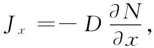
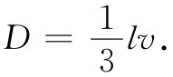
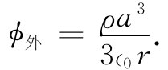
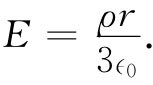

我们取另一个会给出相同类型方程的例子，这回得同扩散打交道了，在第1卷第43章中，我们曾经考虑过离子在纯气体中的扩散，以及一种气体在另一种气体中的扩散。这一次让我们选取一个不同的例子——中子在一种诸如石墨那样的材料中的扩散。之所以着重提出石墨（碳的一种纯净形式），是因为碳并不会吸收慢中子。在碳中，中子能够自由地到处漂移。它们在被核散射而偏转至一个新的方向之前，能够平均沿直线跑过几厘米。所以如果我们有一大块石墨——每边有许多米长——那么最初在某处的中子就会扩散至其他地方。我们想要找出能对它们的平均行为——也就是，对它们的平均流动 ——所做的一种描述。
设N（x，y，z）ΔV代表点（x，y，z）处体积元ΔV中的中子数。由于运动，有些中子就会离开ΔV，而其他一些则将进入。若在一个区域里有比其邻区更多的中子，则从第一个区进入第二个区中的中子比起返回的将会多些，这将有一个净流。按照第1卷第43章中的讨论，我们用一个流矢量J来描述该流动。它的x分量Jx 就是单位时间通过垂直于x方向的单位面积的净 中子数。我们曾经求得
 （12.19）
式中扩散系数D，由平均速度v和在连续两次散射间的平均自由程l表达的关系式为

因而有关J的矢量方程便是
J=-D▽N. （12.20）
中子流经任一个表面元da的时间变化率为J·nda（n照例指单位法向矢量）。于是，从一体积元流出 的净流（根据通常的高斯理论）为▽·JdV。这一流动应该导致在ΔV内的数目随时间而减少，除非有些中子正在ΔV中产生出来（通过某一种核过程）。若在该体积内存在能够在单位时间单位体积中产生出S个中子的源，则流出ΔV的净流将等于（S-∂N/∂t）ΔV。这时我们就有
把式（12.21）和（12.20）两者合并，便得到中子扩散方程 ：
在静止——即其中∂N/∂t=0——情况下，我们再度得到式（12.4）！可以利用关于静电学的知识来解决中子的扩散问题。因此，就让我们来解答这个问题。你们可能会奇怪：如果已在静电学中解答了一切问题的话，为什么 还要再来求解一个问题？原因是，这回我们能够较快 地获得解答，因为静电学的问题已经 解决了！
假设有一大块材料，其中中子——比如是通过铀裂变——正在从一个半径为a的球形区域里朝各方向均匀地产生出来（图12-7）。我们想要弄清楚：各处的中子密度是多少？在产生中子的区域里中子的密度究竟会多么均匀？在源中心处的中子密度与在源区表面上的中子密度的比率是多少？要找出这些答案挺容易。这里，源密度S0 代替了电荷密度ρ，因而我们的问题与具有均匀电荷密度的球体问题相似。求N正如同求势ϕ。以前我们曾计算出一个均匀带电球体的内场和外场，对这些场取积分就可以获得势。在球外，电势为Q/（4π∈0 r），其总电荷Q是由4πa3 ρ/3给出的。因此
 （12.23）
对于球内各点，那里的电场仅仅来自半径为r的球体内的电荷Q（r），亦即Q（r）=4πr3 ρ/3，因而
 （12.24）
这个场随着r增大线性地增大。对E取积分便可得到ϕ，于是我们有
在半径a处，ϕ内 与ϕ外 必定相等，因而该常数就应当是ρa2 /（2∈0 ）（假定离源很远的地方ϕ等于零，这就相当于那里的中子数N为零）。因此，
我们立即就知道另一个问题中的中子密度。答案是
N作为r的函数如图12-7所示。
图12-7 （a）在一大块石墨中，中子在一个半径为a的球体里均匀地产生并向外扩散。发现中子密度N为离源心距离r的函数。（b）类似的静电情况：一个均匀带电球体，其中N对应于ϕ，而J对应于E
那么，源心与边缘的密度之比又是多少呢？在源心（r=0）处，密度正比于3a2 /2；在边缘（r=a）处，密度正比于2a2 /2；因而，两密度的比为3/2。一个均匀源并不会产生均匀的中子密度。你看！静电学的知识给我们提供了关于核反应堆物理学的一个良好开端。
有许多物理情况，其中扩散起着重要作用。例如，离子在液体中的运动，或电子在半导体中的运动，都遵循相同的方程。我们一次又一次地和这种相同的方程式打交道。